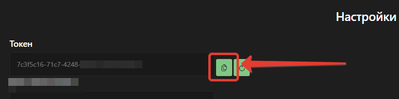
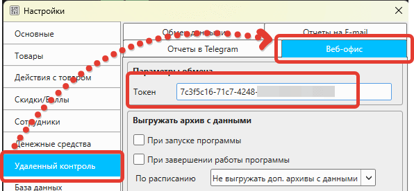
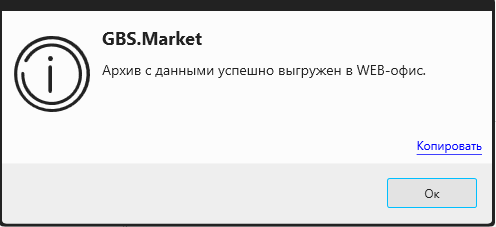
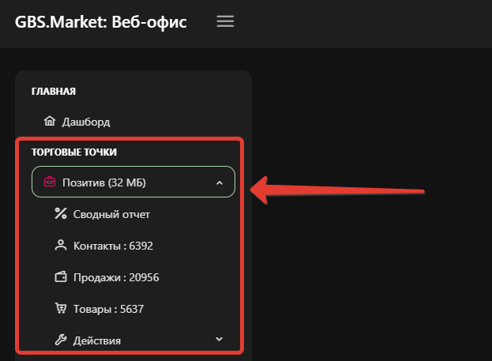

Веб-офис это онлайн-сервис, позволяющий контролировать работу торговых точек, использующих кассовую программу GBS.Market, через браузер. Для того чтобы данные в "веб-офисе" отображались, необходимо выполнить настройку программы по данной инструкции.
Получение токена в "веб-офисе"
Перед тем, как начать настройку настольной версии программы, необходимо зарегистрироваться в личном кабинете "веб-офис" и получить токен для выгрузки данных.
Регистрация в "веб-офис"
Для регистрации перейдите в "Веб-офис" по адресу https://weboffice.gbsmarket.ru и пройдите регистрацию, заполнив форму. После регистрации на указанную электронную почту будет отправлено письмо со ссылкой для подтверждения email-адреса.
Получение токена
В личном кабинете "веб-офис" перейдите в профиль, для этого:
- нажмите на иконку "аккаунт" в правом верхнем углу
- в открывшемся меню нажмите "профиль"
Далее на странице профиля нажмите кнопку "копировать" рядом с полем "токен".
Настройка GBS.Market
Информация
Выгрузка данных в "веб-офис" доступна начиная с версии 6.5.0.2150
Настройка токена
После того как токен будет получен, в GBS.Market с главной формы перейдите в Файл – Настройки – Удаленный контроль – Веб-офис. В поле "Токен" вставьте значение, скопированное из "веб-офиса".
Настройка периодичности выгрузки
Данные в веб-офис могут выгружаться по ряду событий:
- при запуске программы
- при завершении работы программы
- по расписанию:
- каждый час
- каждые 3 часа
- каждые 6 часов
- каждые 12 часов
В настройках программы укажите, по какому событию должна происходить выгрузка.
Важно
Обратите внимание, что каждый час (и другие промежутки) - это не 12:00, 13:00, 14:00 и т.д., а время с момента запуска программы. Т.е. если программа будет запущена в 9:45, то при периодичности в 1 час выгрузка будет происходить в 10:45, 11:45, 12:45 и т.д.
Ручная выгрузка данных
Для того чтобы не дожидаться очередной выгрузки по расписанию, нажмите в настройках кнопку "Выгрузить данные". Программа произведет отправку данных в "веб-офис" и сообщит о результате.
После выполнения всех настроек – нажмите "Сохранить", чтобы зафиксировать изменения.
Проверка данных в "веб-офисе"
Обновите страницу, находясь в "веб-офисе" и, если все сделано верно, вы увидите информацию по вашей торговой точке.
